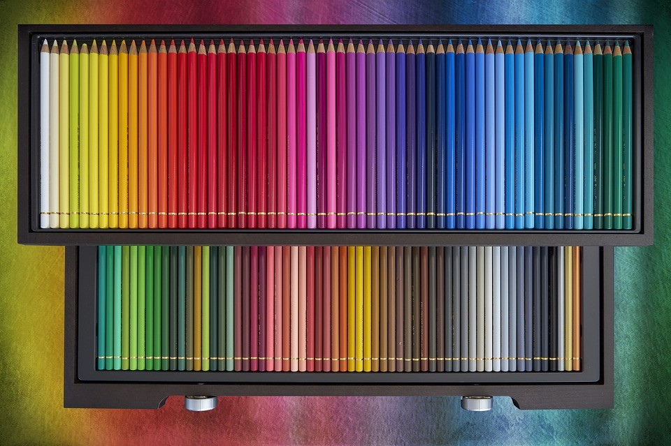

How to play
- รอเวลานับถอยหลัง 3 วินาที
- คลิกเพื่อสลับช่องสีให้ถูกต้องตามหลักการของ Brightness สี โดยการจัดเรียงตามแนวนอน
- กดสลับ โดยใช้จำนวนครั้งน้อยที่สุด และเวลาน้อยที่สุด
- ฝึกฝนให้เชี่ยวชาญ แล้วก็อย่าลืมท้าทายเพื่อนๆมาเล่นด้วยกัน
My color pencils เป็นเกมที่ฝึกฝนทักษะการเเยก Brightness ของสี โดยที่ Brightness หรือ value คือค่าที่แสดงความสว่างหรือทึบของสี การปรับค่า brightness อาจกล่าวได้อีกอย่างว่าเป็นการผสมสีขาวหรือสีดำเข้าไปเพิ่มหรือลดความสว่างให้กับสี โดยที่สีขาวคือสีที่มี brightness สูงที่สุดและสีดำก็เป็นสีที่มีค่า brightness ต่ำที่สุด ส่วนสีอื่นๆ จะมีความสว่างและทึบ หรือสีขาวและดำผสมกันตามอัตราส่วนต่างๆ เช่น สีชมพู มีสีขาวปนอยู่มากกว่าสีแดง (ทำให้สีชมพูมีค่า brightness สูงกว่าสีแดง) และสีแดงมีค่า brightness ที่สูงกว่าสีน้ำตาล การจะมีกล่องดินสอสีที่อลังการสุดในห้อง มาพร้อมกับกล่องดินสอสีใหญ่ขึ้น จำนวนค่าสี การไล่ของเฉดสี จะมากขึ้นตามไปด้วย ก็ต้องมาพร้อมกันกับภาระอันยิ่งใหญ่ ในการจัดเรียงสีให้สวยงามตามเเบบเดิม อีกทั้งยังเอาเทคนิคสีนี้ไปพัฒนางานต่างๆได้อีกมากมาย
